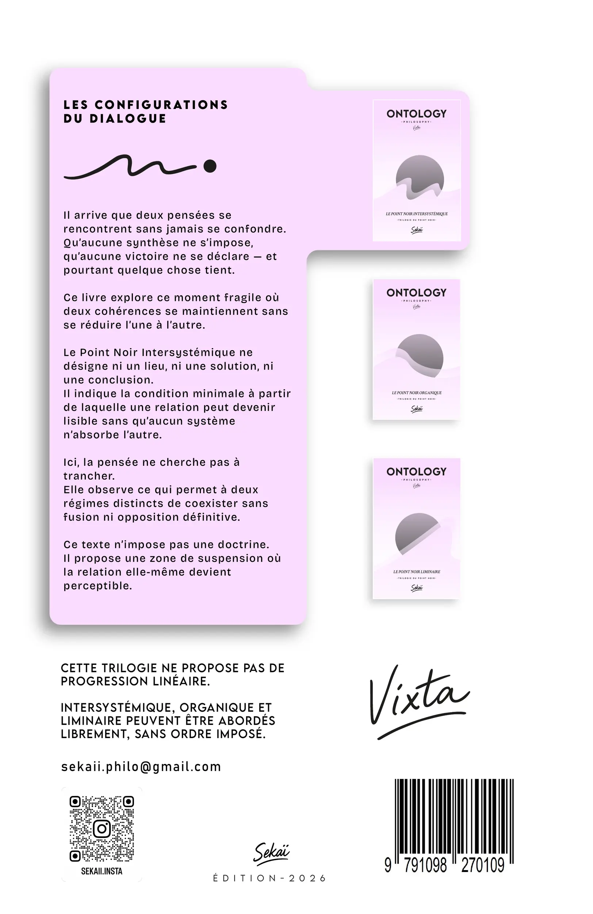

LE LIVRE · 88 PAGES
Le mouvement du texte
Un texte continu, sans chapitres, construit par reprises et déplacements.
LE POINT NOIR INTERSYSTÉMIQUE · VOLUME I
Deux façons de penser se rencontrent sans parvenir à se traduire entièrement. Aucune ne l’emporte, aucune ne disparaît. Le livre suit ce qui demeure entre elles.


Faites glisser le livre pour l’observer. Clavier : flèches · réinitialiser : Début
AVANT D’OUVRIR LE LIVRE
Oui. Il ouvre une trilogie, mais sa question, son vocabulaire et son mouvement sont complets dans ce premier volume.
Une manière cohérente d’organiser ce qui fait sens : ses catégories, ses distinctions et les relations qu’elle reconnaît. Il ne s’agit ni d’une machine, ni d’une institution.
Non. Il décrit une configuration relationnelle. Il ne donne ni protocole de dialogue, ni règle de conduite, ni résultat à atteindre.
LA SITUATION
Pourtant, leur relation ne disparaît pas.
Ni victoire, ni synthèse, ni rupture définitive. Une différence peut rester présente sans devenir une séparation.
LE POINT DE DÉPART
Deux cohérences restent distinctes. Elles ne se convertissent pas entièrement l’une dans l’autre, mais leur relation reste perceptible.
Un ensemble de catégories, de distinctions et de relations à partir duquel une pensée organise ce qui lui paraît sensé.
Deux personnes peuvent employer les mêmes mots sans les faire fonctionner dans le même cadre.
Ce qui se joue entre deux cadres lorsqu’aucun ne peut être entièrement converti dans le langage de l’autre.
La relation n’exige alors ni fusion, ni traduction exhaustive, ni compromis automatique.
La condition où aucun cadre n’impose à l’autre sa propre manière de définir, de traduire ou de conclure.
Ce n’est ni un lieu, ni une entité, ni une solution. Le terme nomme une configuration relationnelle précise.
 EXTRAIT · P. 13
EXTRAIT · P. 13
Page 13 sur 19
Boutons ou flèches gauche et droite. La dernière page consultée reste mémorisée pendant cette visite.
PAGES 13 À 19
« Le Point Noir désigne une condition relationnelle de suspension entre deux cadres de pensée. » Le Point Noir Intersystémique, p. 13
Sept pages continues donnent accès au rythme, aux reprises et à la densité de l’écriture.
LES MOTS DU LIVRE
Chaque définition distingue le sens courant, l’usage retenu dans le livre et les interprétations qui changeraient la fonction du terme.
En clair. Un cadre à partir duquel certaines distinctions, relations et conclusions deviennent compréhensibles.
Dans le livre. Une cohérence qui conserve sa propre organisation lorsqu’elle rencontre une autre cohérence.
Ce que ce n’est pas. Une entreprise, un logiciel, une institution, une personne enfermée dans une opinion ou un ensemble matériel.
En clair. Deux manières de faire sens entrent en relation sans devenir une seule manière de penser.
Dans le livre. Le terme qualifie une relation où la traduction intégrale échoue, sans que cet échec provoque nécessairement une rupture.
Ce que ce n’est pas. Une discussion entre groupes, une comparaison de systèmes techniques ou une recherche automatique de compromis.
En clair. La relation demeure alors qu’aucune des deux cohérences ne prend le contrôle de ce que la rencontre doit signifier.
Dans le livre. Une condition locale de suspension de l’imposition réciproque, sans dissolution des cadres et sans vérité commune obligatoire.
Ce que ce n’est pas. Un lieu, un objet, une entité, un vide, une expérience intérieure, une méthode ou un idéal d’harmonie.
En clair. Dans la relation, un cadre cesse d’exiger que sa propre réponse ferme ce qui se joue.
Dans le livre. La fonction de clôture se désactive sans être remplacée par une autre conclusion, tandis que les cohérences continuent de se tenir.
Ce que ce n’est pas. Une pause mentale, une méditation, un silence volontaire, un renoncement ou une consigne à appliquer.
En clair. Être en relation ne signifie pas nécessairement être d’accord, se comprendre entièrement ou produire quelque chose en commun.
Dans le livre. Un champ de co-présence où des cohérences distinctes restent compatibles sans appropriation ni réduction.
Ce que ce n’est pas. Une harmonie, une réconciliation, une communication réussie ou une convergence finale.
En clair. Quelque chose ne coïncide pas, mais cette non-coïncidence n’oblige ni à vaincre l’autre ni à se séparer.
Dans le livre. La différence se maintient dans la relation sans se résoudre, se neutraliser ou se stabiliser en forme close.
Ce que ce n’est pas. Une lutte, une contradiction logique, une hostilité ou un moteur de transformation.
En clair. Une part de l’autre cadre ne peut pas être entièrement traduite ou possédée depuis le sien.
Dans le livre. Une limite structurelle de la traduction qui n’empêche pas la relation de se maintenir.
Ce que ce n’est pas. Un secret, une obscurité volontaire, un manque d’information ou un défaut qu’il faudrait dépasser.
En clair. Quelque chose de l’autre devient perceptible, même si tout n’est pas expliqué ou ramené à ses propres catégories.
Dans le livre. Une apparition fonctionnelle de la cohérence de l’autre sans capture, traduction exhaustive ni contenu définitivement stabilisé.
Ce que ce n’est pas. Une compréhension achevée, une évidence, une explication totale ou un accès direct à un sens caché.
DOCUMENTS ASSOCIÉS
À la page 81 de l’ouvrage, deux QR codes donnent accès au téléchargement de la thèse stabilisée et du dictionnaire opératif.
Ils ne sont pas publiés directement sur cette page : chacun se consulte en scannant le QR code correspondant à la fin du premier volume.
LE LIVRE · 88 PAGES
Un texte continu, sans chapitres, construit par reprises et déplacements.
LA THÈSE · 3 PAGES
Une orientation, une hypothèse, une définition, des critères de repérage et des limites.
LE DICTIONNAIRE · 70 PAGES
24 entrées précisent les usages, les incompatibilités et les projections erronées.
Une opacité peut demeurer lorsque la traduction exhaustive entre deux cohérences échoue, sans que leur relation se rompe. Le Point Noir désigne la condition locale dans laquelle cette relation reste lisible sans absorption d’un cadre par l’autre.
Trois indices structurent le repérage : aucun cadre n’impose sa propre clôture, la traduction intégrale n’est plus exigée, et la différence demeure active sans devoir être résolue.
Ces indices décrivent une configuration dans le texte ; ils ne constituent pas un protocole destiné à transformer une conversation réelle.
Le dictionnaire associé comporte 24 entrées. Chacune distingue une définition locale, son domaine d’usage, les notions avec lesquelles elle est incompatible et les interprétations qui la feraient changer de fonction.
Cinq familles de glissements sont surveillées : spiritualisation, moralisation, sacralisation, psychologisation et transformation en méthode.
La construction permet d’examiner la cohérence interne du livre, la stabilité de ses définitions et l’accord entre ses documents. Elle n’établit ni loi générale du réel, ni validation scientifique, ni méthode universellement applicable.
L’ÉDITION PUBLIÉE
88 pages · relié · papier crème · disponible à l’unité.
CONTACT
Écrire directement à Vixta ou retrouver les publications liées au livre.